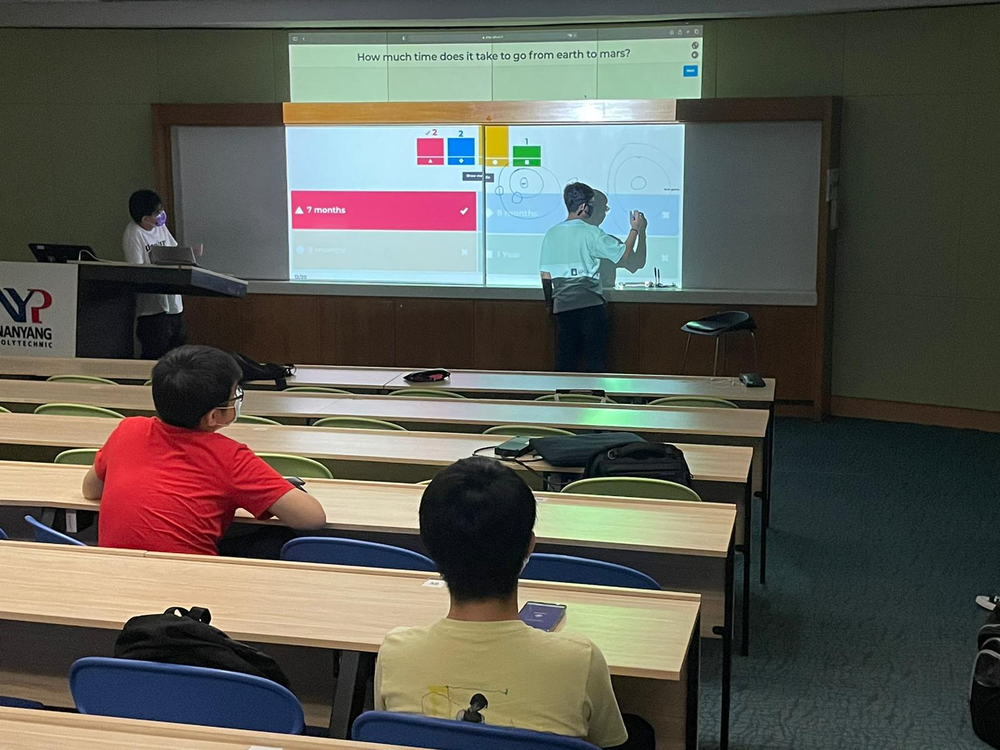
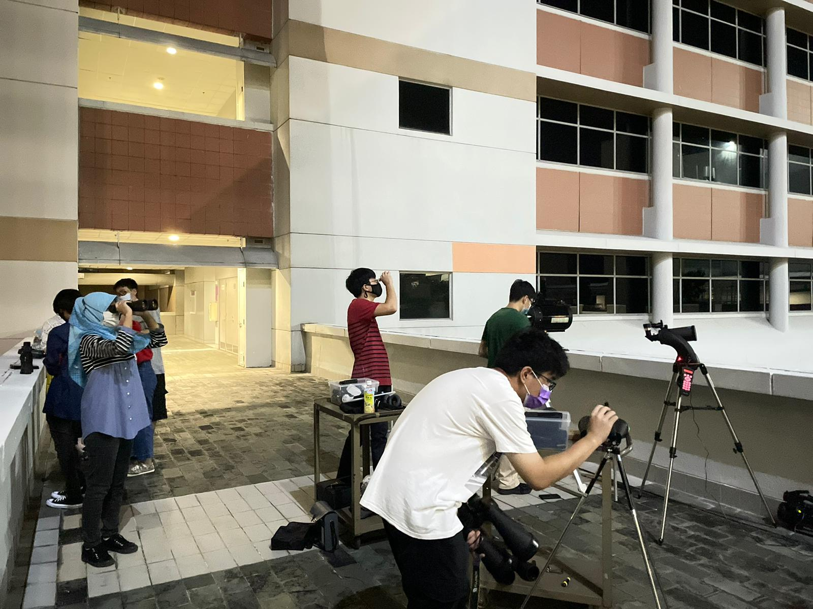
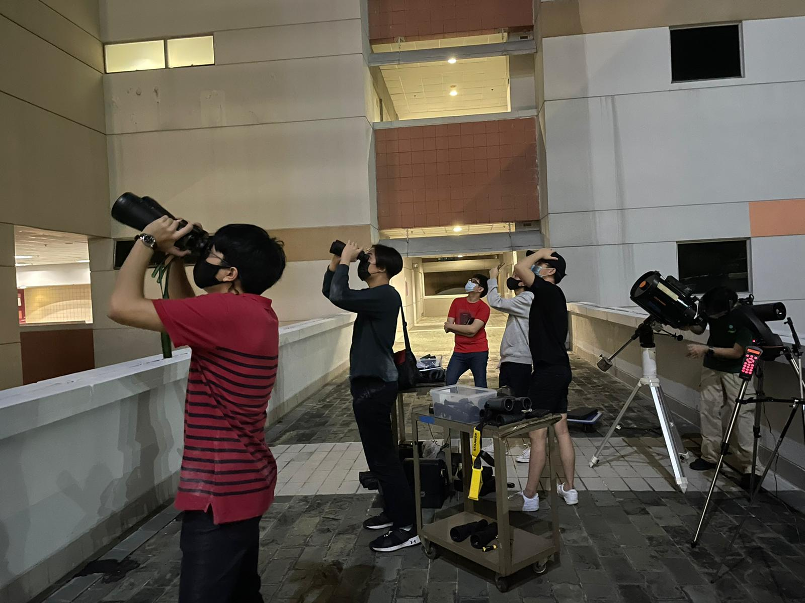

Quote Of The Day
“Remember to look up at the stars and not down at your feet. Try to make sense of what you see and wonder about what makes the Universe exist. Be curious. And however difficult life may seem, there is always something you can do and succeed at. It matters that you don’t just give up.”
-Stephan Hawking
| Time | Activity |
|---|---|
| 1900 Hrs - 1910 Hrs | Attendance Taking |
| 1910 Hrs - 1925 Hrs | Introduction, What does ASTro mean? |
| 1925 Hrs - 1945 Hrs | How CCA works in NYP |
| 1945 Hrs - 2010 Hrs | IceBreaker Activities |
| 2010 Hrs - 2050 Hrs | Stargazing |
| 2050 Hrs - 2100 Hrs | Debrief and Wrap Up |
| 2100 Hrs - 2115 Hrs | Possibility of Extension |
Introduction

To kick start the year for Astronomy Club, we hosted a physical session to welcome new members to our club.
First and foremost, we introduced to the club our executive committee members.
Eden
President
Reenikka
Vice-President
Devansh
Social Media Manager, Secretary,
Treasurer, & Quartermaster
Now on to the wonderful people who help ensure the club runs within rules and regulation, provide useful advice as well as budgeting.
We will introduce to you our staff-in-charge:
Mr Khoo Kiah Hong
SDE, Staff in Charge
Mr Jeremy Chong
Club Advisor
Simply put all you need is 80% of attendance in ASTro sessions to get you 1 CCA Point in Participation.
Moreover, there are different types of CCA Points which are as follows
PEARLS System
Participation
Max - 6 points
Enrichment
Max - 6 points
Achievement
No Max
Representation
No Max
Leadership
Max - 12 points
Service
Max - 6 points
Icons made by Freepik from www.flaticon.com
Icebreaker + Kahoot Session
We then had a icebreaker session to get to know each other. The games played were charades and more, overall it was enriching and members warmed up to each other!
We played kahoot to test the general knowledge of our members, with every questions wrong we will explain the logical and astronomical facts to why our answer is created in that way. As seen in the picture, Devansh is drawing the diagram to proof why a space shuttle would take 7 months to travel from Earth to Mars. In all, kahoot was very fun and it help us to understand the level of knowledge our members had.
Star Gazing Session

Its been 1 year since Astronomy Club has a proper Star Gazing Session. Despite that we managed to have 3 telescopes ready for the event and we star gaze into the night sky. Unfortunately the skies were cloudy that day and the most we could see is only 1-2 star. While the conditions were not impressive that day, our members got to bond more and know each other. All in all, it was a terrific first session for AY21/22!